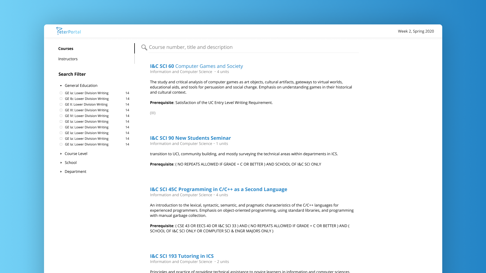
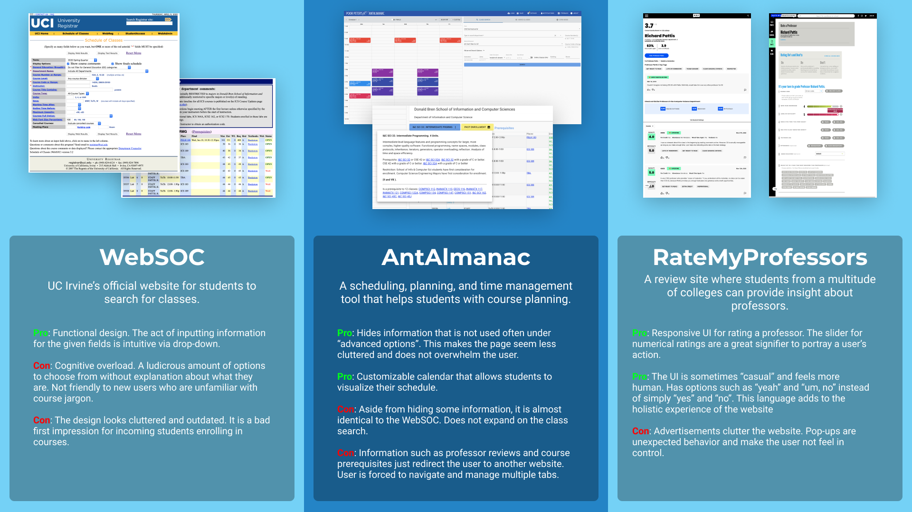
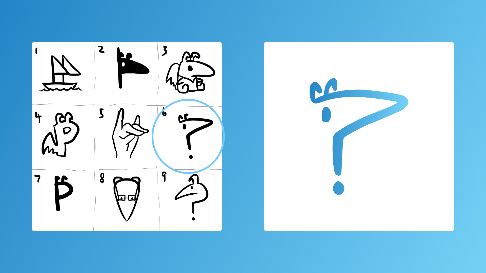
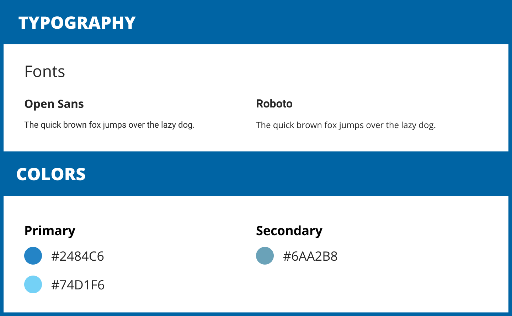
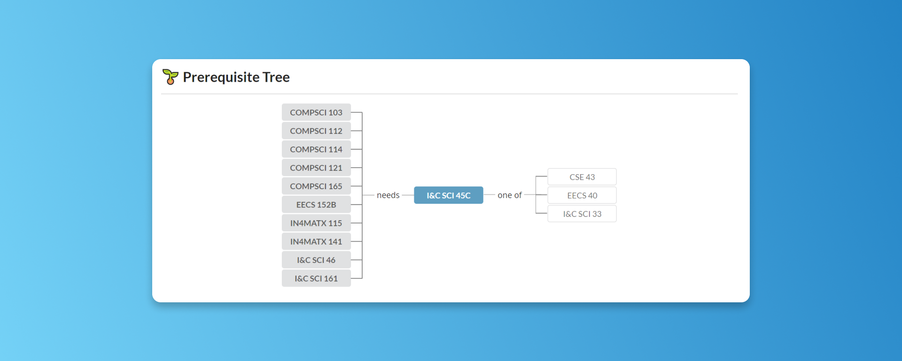

A website for students to view organized information about their courses and professors.

Role: UI/UX Designer
Team: Marawin Chheang, Monica Bui, Aaron Chen, Ritika Roy Choudhury, Raman Gupta, Yizhen Liu, Braedon Schmidt, Mayank Sharma, William Yang, Evelyn Cheng, Trisha Le, Ryan Mohta, Rona Chan
Duration: Jan 2020 - May 2020, 5 months
PeterPortal is a website that provides the user an easy way for finding courses. Information such as a course’s description, prerequisites, professors, and reviews, are organized in one place. The team working on this project consisted of 14 members of the Information & Computer Science Student Council Projects Committee at UCI. Four of which, including me, collaborated as a team of UX designers. We were responsible for researching and designing mockups for the website. In addition to this, I was individually responsible for designing the PeterPortal icon and the course review feature.
Enrolling in classes at UC Irvine can be a stressful process. It is difficult for a user to find information about courses they want to take and the instructors that teach them. A user often has to go to multiple websites to find the information they want about a single course, which is time consuming.
Competitive Analysis:
The UX team was tasked with performing competitive analysis, and discovering what similar websites do right and wrong. We wanted to figure out how to present the user with courses in a way that was not overwhelming, and to have the user be able to easily navigate through the web pages. In addition, we wanted to find out how we could visualize information to the user in a way that was intuitive and easy to use. Some websites we used for the competitive analysis were WebSoc, AntAlmanac, and RateMyProfessor.
User Pain Points:
The process of finding a specific course is tedious. It often requires a user to filter courses based on category. Then, separately, they must also filter by course number.
A user is forced to navigate to multiple pages to find information about one class. For example, when trying to find the prerequisites for a course, a user must go to a separate webpage with a catalogue of UCI courses and their prerequisites.

There must be a way to accelerate the process for finding a course. This can be achieved with a fuzzy search. Allowing a user to search for a course will help them find what they are looking for much faster than having to select multiple drop-down options to filter for a course.
There must be a constraint to the amount of filters presented to a user when searching for classes, so that they are not overwhelmed by a large amount of options. Based on our competitive analysis and the PeterPortal team’s personal anecdotes, the most common filtering options are for school and department.
The website should congregate course information into one place so that the user does not have to manage multiple websites for information. The website should include ratings, prerequisites, course descriptions, and more all in one place.
The review feature should have responsive UI so that users can provide accurate ratings without making mistakes.
In order to maintain consistency throughout every page of the website, we developed branding guidelines for the website. We placed constraints on what fonts and colors we were allowed to use, which strengthened the website’s design and identity.
I was personally tasked with designing the icon for the website. This icon was chosen after multiple sketches and drafts were presented to the rest of the team. The PeterPortal logo is representative of UC Irvine’s mascot, the anteater. In addition, it resembles a question mark, representing the user’s desire to find answers to their questions.


Designs for the website were created using Figma.
Home Page:
Our team chose to omit obscure filtering options such as “Days” and “Courses Full Option”, and opted to include filtering options that users were most likely to use. We also added a fuzzy search to accelerate the process of finding a course.
Prerequisite Tree:
On the course page, we have included course prerequisites, visualized as a tree. In addition, the user can see what the current course is a prerequisite for, which was a feature not available on other similar websites.

Course Reviews:
I was responsible for designing the professor review feature. I derived a lot of inspiration from RateMyProfessor, as the UX team widely agreed that their approach to the review feature was very good. Color-coordinated ratings allows a user to quickly recognize a course’s quality and difficulty with a quick glance. Unlike RateMyProfessor, I chose to model the act of creating a review, and displayed reviews, to have similar structures to each other. By matching these two systems, a user who has read reviews will intuitively understand how to submit a review, and vice versa.